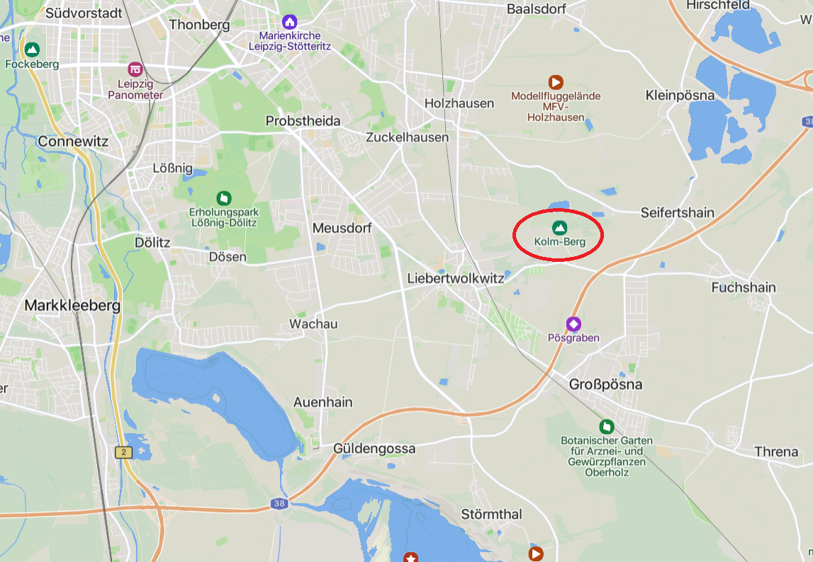
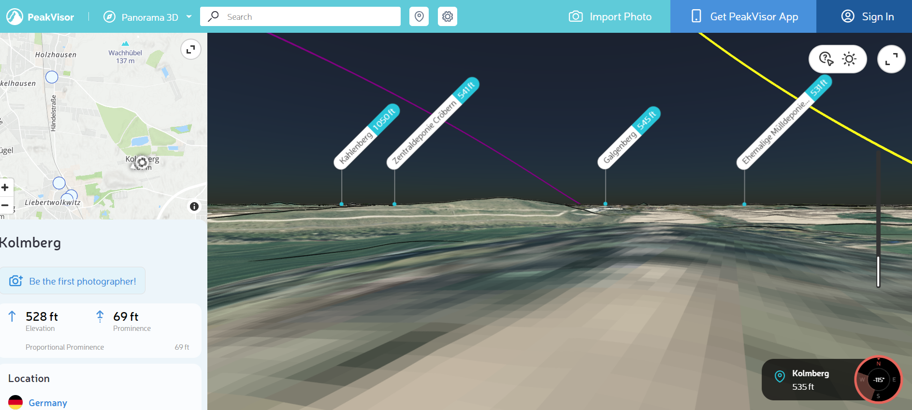
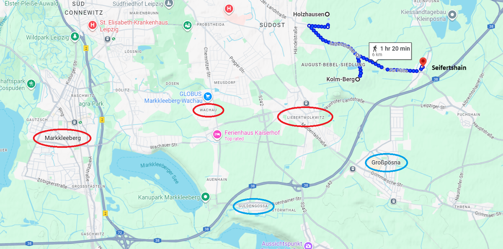
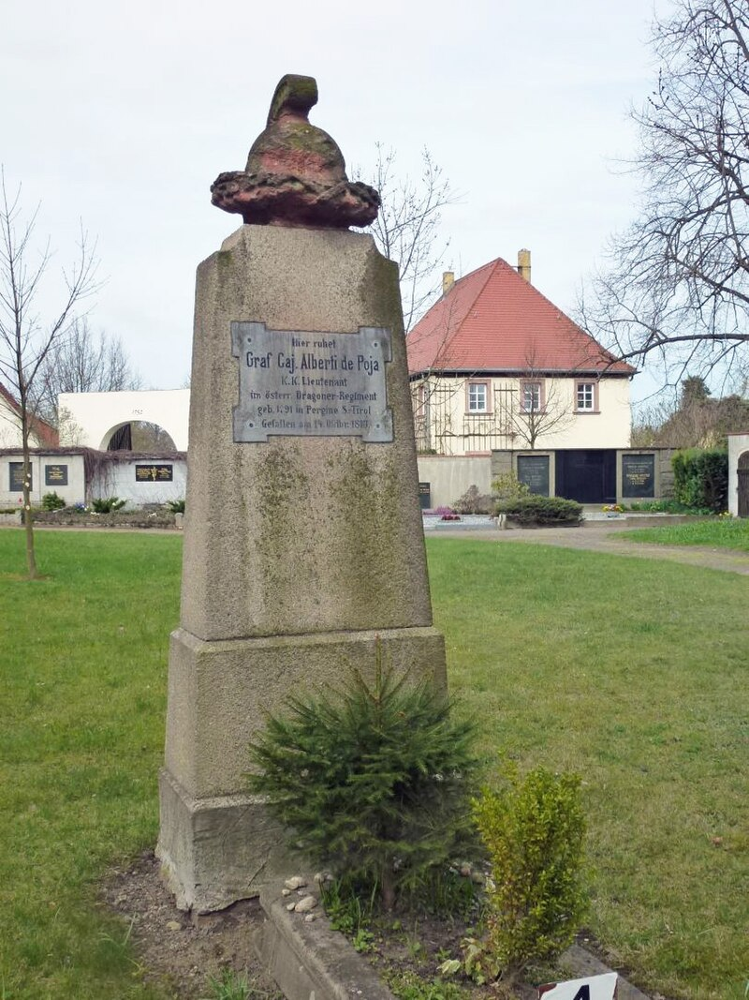
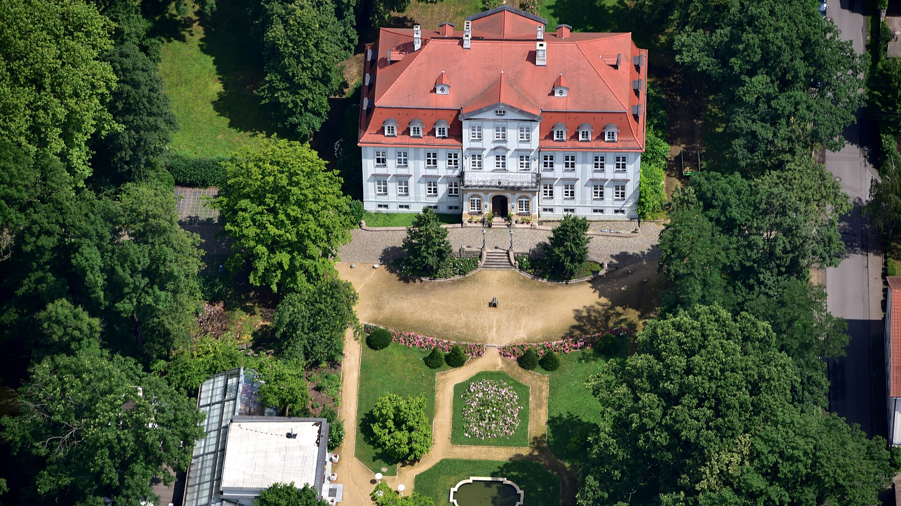
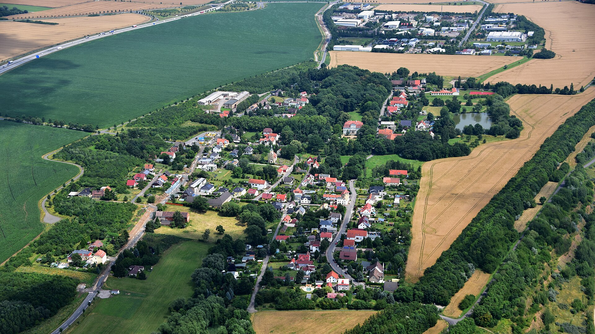
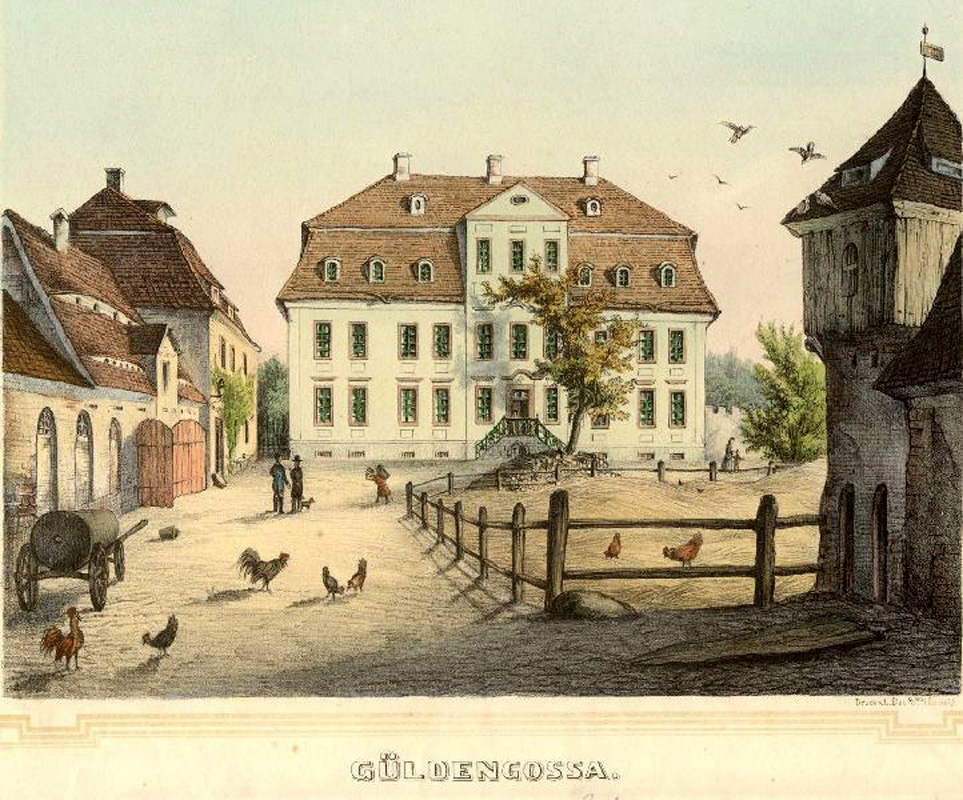

라이프치히 전투 (12) - 알렉산드르의 등장
게시: 2025-08-11T06:15:41+09:00
나폴레옹은 언제나 주도권을 쥐고 공격하는 스타일의 지휘관이었지 적의 선제 공격에 그때그때 효과적으로 대응하는 것을 장기로 삼는 사람은 아니었습니다. 굳이 무협지에 비교하자면 확실한 초식인 항룡십팔장으로 적을 몰아치는 곽정 스타일이었지 초식이 없는 독고구검을 익힌 영호충처럼 적의 검초를 살핀 뒤 그 헛점을 찾아내는 스타일이 아니었습니다. 그러다보니 자신보다 먼저 슈바르첸베르크의 공격이 시작되자 원래 자신이 세워두었던 계획이 어그러지는 결과가 나와버렸습니다. 먼저, 자신의 좌익, 그러니까 전선의 서쪽인 마클리베르크가 클라이스트에게 함락되어버리자, 근위대 경기병 여단과 함께 예비대로 준비해두었던 오쥬로의 제9군단을 투입하여 탈환하도록 했습니다. 뷔르템베르크의 오이겐이 공격하는 바하우 상황도 방치할 수가 없었습니다. 거기에는 우디노의 신참근위대 제1군단을 투입했습니다. 고르차코프와 클레나우의 공격이 집중되던 리버트볼크비츠에는 모르티에의 신참근위대 제2군단과 함께 고참근위대 제2사단을 투입하여 로리스통을 지원했습니다. 리버트볼크비츠를 축으로 적을 우회하여 적의 측면을 노리던 막도날의 제11군단은 역시나 나폴레옹의 측면을 노리고 우회 기동을 꾀하던 클레나우와 맞부딪혀 멱살을 쥐고 뒹구는 결과를 낳았습니다. 이건 나폴레옹이 의도하던 기동전과는 거리가 멀었습니다. 게다가, 이러고 나니 나폴레옹이 승리를 위해 준비했던 예비병력이 다 소진되고 말았습니다. 하지만 여전히 나폴레옹에겐 비장의 카드가 남아 있었습니다. 고참근위대 대부분이 남아 있었고, 무엇보다 북쪽에서 내려올 마르몽의 제6군단, 베르트랑의 제4군단, 수암의 제3군단 등이 있었던 것입니다. 이들만 도착하면 어디에선가 반드시 드러날 적진의 약점에 이들을 투입하여 연합군 전선을 한꺼번에 붕괴시킬 자신이 있었습니다. 그는 리버트볼크비츠 방면의 전황이 안정되자 다시 갈건베르크 언덕으로 귀환하여 적진의 약점을 찾으려 망원경을 뽑아들었습니다. 문제는 마르몽도 베르트랑도 수암도, 아무도 나타나지 않았다는 점이었습니다. 지난 번에 설명드린 것처럼, 라이프치히 북서쪽의 블뤼허와 서쪽의 귤라이의 공격이 개시되면서 이들이 발이 묶였기 때문이었습니다. 반대로 생각하면, 연합군으로서도 나폴레옹의 뒤통수를 후려갈길 절호의 펀치가 블뤼허와 귤라이였는데, 그 펀치들이 마르몽과 베르트랑에게 막힌 것이긴 했습니다. 그럼에도 불구하고 나폴레옹에겐 아직 승리의 기회가 남아 있었습니다. 전쟁에서는 아군이 잘하는 것도 중요하지만 적군이 실수하는 것도 중요한데, 슈바르첸베르크를 비롯한 연합군의 수뇌부는 여전히 나폴레옹과 그 부하들에 비하면 한 수 떨어지는 인물들이었기 때문이었습니다. 게다가 확실히 이번 전쟁에 뒤늦게 참전한 오스트리아군의 미숙함은 두드러졌습니다. 비트겐슈타인이 무려 3만3천의 병력을 몰아주며 비장의 펀치로 준비했던 클레나우의 오스트리아군은 2시간이나 지각했을 뿐만 아니라, 1만5천도 안 되는 막도날의 제11군단과 콜름베르크(Kolmberg) 언덕에서 부딪혀 혈투를 벌이다 후퇴해버렸습니다. 의도치 않게 리버트볼크비츠에 있는 로리스통과 콜름베르크의 막도날 사이에 끼어 버린 것이 가장 큰 패착이었습니다. 이 과정에서 클레나우는 거의 막도날의 포로가 될 뻔하는 위기를 겪기도 했습니다.

(콜름베르크, 즉 콜름 언덕의 위치입니다. 그랑다르메의 거점 위치는 빨간 원으로, 보헤미아 방면군의 거점 위치는 파란 원으로 표시했습니다.)

(이렇게 지리적 지표면의 높낮이에 따른 관점을 시뮬레이션 해주는 웹사이트도 있네요. 이건 약 160m짜리 고지인 콜름베르크에서 바라본 리버트볼크비츠 방면의 모습입니다. 나폴레옹이 위치한 갈건베르크의 모습이 중앙에 보입니다. 참고로 갈건베르크도 166미터에 불과합니다.) 12시 경, 클레나우의 오스트리아군을 밀어낸 막도날은 그 여세를 몰아 클레나우가 후퇴한 남쪽 그로스푀스나(Großpösna)가 아니라, 방향을 틀어 아무 적군이 없는 북동쪽의 자이퍼트샤인(Seifertshain) 방면으로 이동했습니다. 이건 막도날이 한때나마 나폴레옹이 보버(Bober) 방면군의 지휘권을 맡길 정도로 역량있는 지휘관이라는 것을 보여주는 행동입니다. 막도날에게 주어진 원래 임무는 클레나우를 격파하라는 것이 아니라 보헤미아 방면군의 우익을 우회 포위하는 것임을 승리의 흥분 속에서도 잊지 않았다는 뜻이기 때문입니다.

(북쪽의 홀츠하우젠에서 내려와 콜름베르크에서 클레나우를 무찌른 뒤, 그로스푀스나로 후퇴하는 클레나우를 내버려 두고 북동쪽의 자이퍼트샤인으로 향한다는 것이 언듯 이해가 가지 않을 수도 있습니다. 그러나 그게 옳았습니다.)

(자이퍼트샤인은 지금도 전체 인구가 300명 정도인 정말 작은 농촌 마을입니다. 많은 독일 마을 이름이 -hain으로 끝나는데, 이는 '작은 숲' '숲 언저리' 등의 뜻이라고 합니다. 자이퍼트샤인도 라이프치히 전투의 격전지 중 하나인데, 사진 속 묘비는 라이프치히 전투에서 쓰러진 오스트리아군 장교인 알베르티 디 포야 백작(Graf von Alberti di Poja)의 무덤입니다. 알베르티 디 포야 가문은 원래 프랑스 출신 가문으로서, 북부 이탈리아에 정착하여 오스트리아 합스부르크 가문에 충성한 가문입니다.) 아무리 주어진 임무에 충실한다고 해도, 원래 후퇴하는 적군은 반드시 추격하여 전과를 확대시켜야 하는 것 아닐까요? 아니었습니다. 그런 것은 나폴레옹이 알아서 결정할 일이었고, 실제로도 그랬습니다. 갈건베르크 언덕에서 망원경으로 막도날의 제11군단이 클레나우를 몰아내는 것을 본 나폴레옹은 오후 1시, 대대적인 반격을 지시합니다. 원래 의도했던 오쥬로, 마르몽, 베르트랑 등의 예비병력이 모두 다른 곳에 동원된 상황이었지만, 나폴레옹은 제1기병군단 및 근위기병군단을 동원하여 적진에 돌파구를 뚫도록 하고, 여태까지 수비만 하던 각 거점의 군단들에게 일제히 공세로 나가도록 지시했습니다. 가령 리버트볼크비츠에서는 로리스통의 제5군단과 그를 돕던 모르티에의 신참근위대가 일제히 클레나우가 후퇴한 방향인 그로스푀스나로 진격했습니다. 바하우와 마클리베르크에서도 일제히 그랑다르메는 공세에 나섰고, 아침에 기세등등하게 나섰던 보헤미아 방면군은 일제히 무너져 후퇴했습니다. 이제 나폴레옹의 큰 그림대로 섬멸전이 펼쳐질 시간이었을까요? 하지만 보헤미아 방면군에는 나폴레옹의 안중에도 없던 노련한 군사전문가가 있었습니다. 바로 짜르 알렉산드르였습니다. 사실 따지고 보면 알렉산드르는 1805년 아우스테를리츠 전투의 쓰라린 참패부터 시작하여 나폴레옹의 전술을 체험으로 배운 전문가 중 하나였습니다. 그는 1812년 러시아 침공전 초반에 잦은 참견으로 많은 삽질을 했으나 그때의 뼈아픈 경험 이후 배운 바가 있어, 부하에게의 권한 부여와 참견 자제라는 원칙을 꽤 잘 지키는 좋은 군통수권자가 되어 있었습니다. 그래서 결전이 벌어지는 운명의 날에도 느지막하게 오전 9시경에나 귈덴고사(Güldengoßa)의 남서쪽에 있는 언덕에 차려진 사령부에 도착하여 한가하게 공격을 관람하기 시작했습니다. 그런데 그런 알렉산드르의 눈에도, 비트겐슈타인이 주도하는 5갈래의 공격의 문제점이 대번에 들어왔습니다. 5갈래 공격의 부대 간격이 너무 넓어서 각개격파 당하기 딱 좋았던 것입니다.

(귈덴고사에서 가장 중요한 건물은 바로 귈덴고사 성(Schloss Güldengossa)입니다. 18세기에 크레겔 폰 슈테른바흐가 이 바로크 양식의 성과 공원을 조성하면서 역사적 면모를 갖추었고, 지금도 귈덴고사 성은 이 마을의 역사적 풍경을 형성하는 핵심 요소입니다. 귈덴이라는 말은 독일어로 황금빛이라는 뜻이지만 Gossa는 슬라브어를 근본으로 하는 13세기의 지명 Ghozowe에서 유래된 것 같다고 합니다.)

(귈덴고사(Güldengossa)는 보시다시피 지금도 매우 작은 마을입니다. 라이프치히 전투에서 연합군의 사령부이자 공격 개시점 역할을 한 이 곳도 여러차례 주인이 바뀌며 크게 파괴되어, 당시 전투가 얼마나 격렬했는지 알 수 있습니다. 이 사진의 중앙 약간 오른쪽 윗부분에 숲 속에 폭 싸여있는 큰 건물이 귈덴고사 성입니다.)

(귈덴고사 성의 1860년대 모습입니다.) 부하 장군들의 실력이 이 정도로 엉망일 줄은 몰랐던 알렉산드르는 여태까지 자제하던 참견 욕구를 발휘하여 지휘 체계를 무시하고 당장 여기저기에 지시를 내리기 시작했습니다. 그는 러시아 척탄병 군단과 흉갑기병 여단, 그리고 원래 좌익에 소속되었다가 분쟁 끝에 우익으로 넘어왔던 러시아-프로이센 근위대 등의 예비대를 전진 배치하여 지원을 준비하도록 지시했습니다. 뿐만 아니라, 플라이서강 좌안에서 있던 메르펠트(Merveldt)의 오스트리아 근위대 및 예비대를 플라이서강 우안으로 옮겨 비트겐슈타인의 공격을 지원해달라고 슈바르첸베르크에게 요청했습니다. 특히 마지막 부분은 좀 선을 넘은 요청이었습니다. 분명히 총사령관은 슈바르첸베르크였지만, 10월 16일의 남쪽 전선에서의 작전은 사실상 두 갈래로 지휘권이 나뉘어 있었습니다. 즉 플라이서강 좌안의 공격은 슈바르첸베르크가, 플라이성강 우안의 공격은 바클레이가 담당했던 것이나 다름없었습니다. 전날, 알렉산드르는 러시아 장군들의 요청에 따라 플라이서강 좌안의 병력 중 러시아-프로이센 근위대 등의 예비대를 우안으로 뺴내온 바 있었고, 이는 슈바르첸베르크의 자존심을 크게 상하게 한 바 있었습니다. 그런데 이젠 그나마 좌안에 남아있던 오스트리아 근위대까지 모조리 우안으로 옮기라고 지시한 것입니다. 오전에 이 지시를 받은 슈바르첸베르크는 속으로 욕을 했을 것입니다. 하지만 알렉산드르는 연합국 최고 권력자였습니다. 슈바르첸베르크는 마지못해 지원했으나 그 지시는 오후 늦게나 이행되었습니다. 플라이서강을 건너는 것이 쉽지 않았던 것입니다. 그런데, 그런 알렉산드르의 주제 넘은 참견이 보헤미아 방면군을 구해 냅니다. Source : The Life of Napoleon Bonaparte, by William Milligan Sloane Napoleon and the Struggle for Germany, by Leggiere, Michael V With Napoleon's Guns by Colonel Jean-Nicolas-Auguste Noël https://www.britannica.com/event/Napoleonic-Wars/Dispositions-for-the-autumn-campaign https://www.historyofwar.org/articles/battles_leipzig_16_october.html https://warhistory.org/@msw/article/leipzig-battle-of-the-nations https://www.napolun.com/mirror/napoleonistyka.atspace.com/Leipzig_battle.htm https://de.wikipedia.org/wiki/G%C3%BCldengossa https://peakvisor.com/peak/kolmberg-17bplk1ka.html?yaw=-115.31&pitch=-3.51&hfov=90.00 https://de.wikipedia.org/wiki/Seifertshain https://de.wikipedia.org/wiki/Alberti_von_Poja